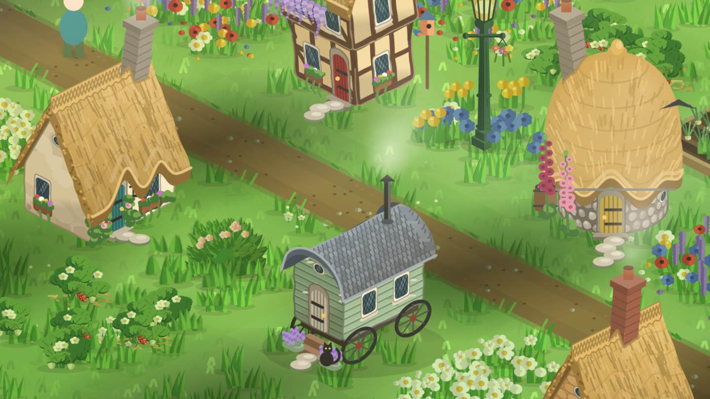

Games like Pikmin Bloom, but you build a town
StepHaven, the cozy walking game for iPhone, is one to try. If you love how gentle Pikmin Bloom is but wish your steps added up to something you could shape yourself, here's where to look. I make StepHaven, the first one, so the rest are kept to what their own listings say.

What are some games like Pikmin Bloom for iPhone?
If you want something to build, try StepHaven, the cozy walking game for iPhone, a town builder where your steps from Apple Health are the points you spend. For something to do on the walk, Pokémon GO is from the same publisher. For a calm world that grows as you walk, try Pixel Islands or MistyWay. Walkr turns steps into fuel for a spaceship, and Fogbreaker clears fog from a map of your real surroundings.
Which one fits depends on what you like about Pikmin Bloom. So here they are, sorted that way. Every game other than StepHaven was checked against its US App Store listing on November 11, 2026. Check the listing on your own phone before you download, since games change.
Is there a game like Pikmin Bloom where you build a town?
Yes. In StepHaven every step recorded in Apple Health becomes a point, and you spend points on cottages, gardens, paths, ponds, bridges and railways, placing each one where you want it. You play after the walk, not during it.
It keeps the parts of Pikmin Bloom that feel kind. Your steps count in the background, there's a small present waiting each day, and nothing is lost if you skip a few days. What's different is that it's a building game: villagers move into the homes you build, deer and rabbits wander in once there's enough green, and the light follows your clock through the day and the seasons.
- Counts: steps from Apple Health, from your iPhone or an Apple Watch. Wheelchair pushes from an Apple Watch earn two points each. Workouts like a ride or a swim can earn through an Ember you light first.
- Location: not used. There's no map of where you've walked.
- Costs: free, with no ads. An optional StepHaven+ membership and some item packs add more to build, but steps and points can't be bought.
- Needs: an iPhone on iOS 26.5 or later. Not on Android.
A closer look: StepHaven vs Pikmin Bloom.
If you like having something to do on the walk
Pokémon GO is from Scopely Explore, the same publisher as Pikmin Bloom. You find Pokémon at real places around you while you're out. It uses your location, and with Adventure Sync it can count walking distance from Apple Health while it's closed. Free, with in-app purchases.
Fogbreaker covers a map of your real surroundings in fog and clears it as you walk, with levels and step streaks. Free, with in-app purchases.
If you like watching something grow
Pixel Islands grows a floating pixel-art island through eight stages as your Apple Health steps add up. Its listing says no ads, no GPS and no streak pressure. It's simpler than a town builder: the island follows designed stages rather than your own layout. Free, with in-app purchases.
MistyWay walks your character through a handcrafted fantasy world, clearing fog and opening new paths, and you can furnish a tent along the way. It reads Apple Health and its listing says no ads. It has a daily streak system with a streak freeze and reminders, if that suits you. Free, with in-app purchases.
If you like collecting
Walkr turns the steps your iPhone's motion sensor counts into fuel for a little spaceship, and you collect planets and complete missions. Free, with in-app purchases, and its listing mentions ads.
Is there a game like Pikmin Bloom that doesn't use my location?
StepHaven doesn't use your location at all; it only reads step counts from Apple Health. Pixel Islands' listing also says it uses no GPS.
Is there a game like Pikmin Bloom I can play with friends?
In StepHaven, up to four people can build the same town, each spending their own steps. Pokémon GO is the pick if you want to meet up and play in person. More on building a town with friends.
Want the longer list? Walking games for iPhone, honestly compared covers nine games, including Zombies, Run! and The Walk for people who like a story.
StepHaven: Cozy Town Builder
Free on iPhone. No ads, and your steps stay on your phone.
Download on theApp Store